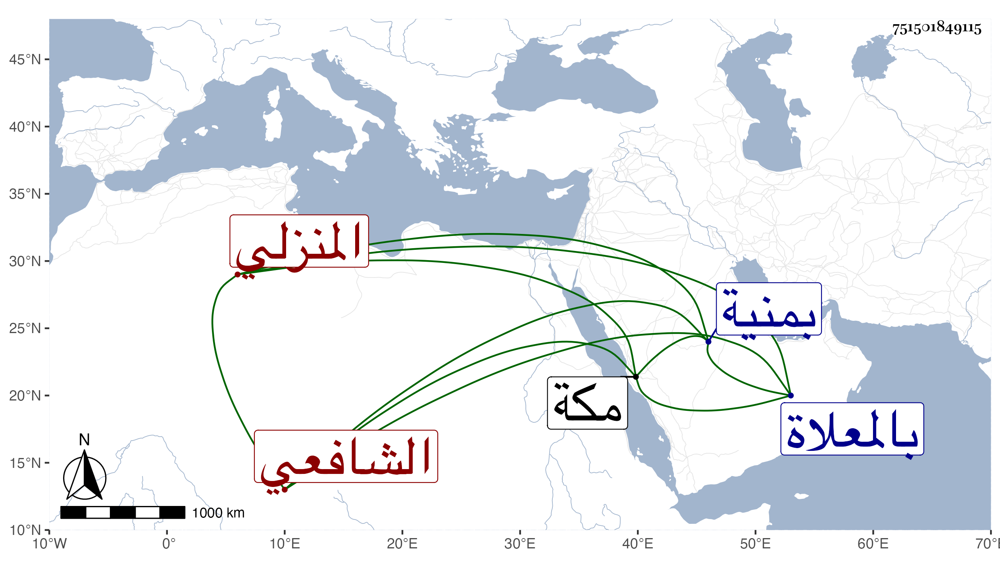

0902Sakhawi.DawLamic.ITO20230111-ara1.EIS1600.751501849115
Biography ID: 751501849115
570
أحمد بن محمد بن يحيى بن مصلح المنزلي الشافعي أخو يحيى الآتي ويعرف بابن مصلح . أصله من فلاحي المنزلة فنشأ هذا هو وجماعة من أخوته وأهله مفارقين لهم وقرأ على الناصري بن سويدان في الفقه والعربية وعلى الزين عبد الرحمن الديروطي تلميذ الشمس بن الصائغ أربع قراءات من السبعة وكان قد حفظ في كبره القرآن والمنهاج والملحة والشاطبية ، وعرضها على جماعة منهم العلم البلقيني فيما بلغني وأقام بمنية راضي من أعمال المنزلة وابتنى بها جامعا وانتمى إليه الفقراء والمريدون والطلبة وكان قائما بكلفتهم مما يرد عليه من الفتوحات ونحوها مع تحريه في القبول لا يدخر شيئا بل ويقوم على جماعة في بركه ، وربما أخذ ما كان معهم ووزعه عليهم وعلى غيرهم في السفر وغيره ، على قدم عظيم من الأمر بالمعروف والنهي عن المنكر والتلاوة والعبادة وملازمة الأذكار والاشتغال بما يهمه بحيث لم ار أحدا إلا وهو يخبر بتفرده بذلك ، وربما أقرأ في ربع العبادات . مات بمكة في يوم الثلاثاء عشرين جمادى الأولى سنة ثلاث وسبعين وصلى عليه عند باب الكعبة ودفن بالمعلاة وقد زاد على الثمانين رحمه الله ونفعنا به .
